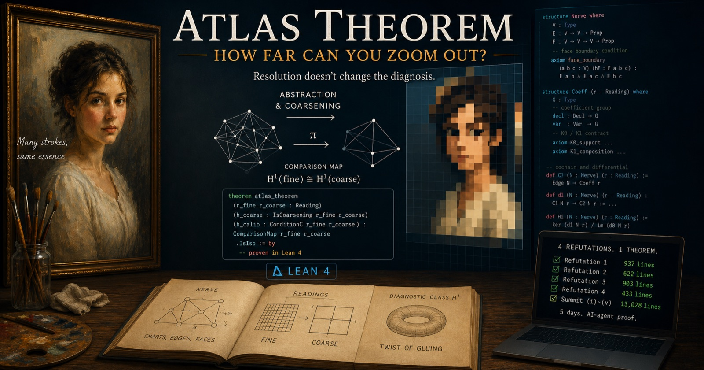

---json
{
  "layout": "base.njk",
  "title": "Outreach",
  "description": "The SAGA preprint on Zenodo and external articles and essays introducing AAT, SFT, ArchSig, and Attractor Engineering.",
  "order": 44,
  "llmsLabel": "Outreach",
  "navSection": "outreach"
}
---
    <main id="main">
      <section class="article-hero section-band">
        <div class="site-shell">
          <nav class="breadcrumb" aria-label="Breadcrumb">
            <a href="../">Home</a>
            <span>Outreach</span>
          </nav>
          <p class="eyebrow">Outreach</p>
          <h1>The paper, articles, and essays on AAT, SFT, and ArchSig.</h1>
          <p class="lede">
            The citable preprint on Zenodo, and public introductions, essays,
            and platform articles for readers who want the ideas before
            entering the full theory notes.
          </p>
        </div>
      </section>

      <section class="section-band">
        <div class="site-shell article-layout">
          <aside class="article-sidebar" aria-label="Outreach page navigation">
            <nav class="toc-panel" aria-labelledby="toc-title">
              <h2 id="toc-title">On this page</h2>
              <ol>
                <li><a href="#paper">Paper</a></li>
                <li><a href="#featured">Featured</a></li>
                <li><a href="#blogs">Blogs</a></li>
                <li><a href="#essays">Essays</a></li>
                <li><a href="#japanese-articles">日本語記事</a></li>
              </ol>
            </nav>
            <div class="boundary-note">
              <h2>Platforms</h2>
              <ul>
                <li>Zenodo: preprints with citable DOIs.</li>
                <li>Blog: English technical long-form articles.</li>
                <li>Medium: English essays on the thought behind the theories.</li>
                <li>Zenn: Japanese technical articles.</li>
                <li>This page lists public artifacts only.</li>
              </ul>
            </div>
          </aside>

          <div class="article-main">
            <section id="paper" class="article-section">
              <h2>Paper</h2>
              <p>
                The first paper of the research program: the mathematical
                proof, the Lean 4 verification status, and a reproducible
                measurement on a real microservice system, pinned to one
                snapshot.
              </p>
              <ul class="chapter-list">
                <li>
                  <a href="https://doi.org/10.5281/zenodo.21603761" target="_blank" rel="noopener noreferrer">
                    SAGA: A Comparison Theorem for Local-to-Global Software Architecture
                  </a>
                  <span>
                    Preprint, Zenodo, 2026. CC BY 4.0.
                    DOI: <code>10.5281/zenodo.21603761</code>.
                    The obstruction measured in the language of repair and the
                    obstruction measured in the language of equations are the
                    same cohomology class &mdash; proved as a comparison
                    theorem, machine-checked in Lean, and measured with
                    ArchSig on train-ticket (42 services).
                  </span>
                </li>
              </ul>
            </section>

            <section id="featured" class="article-section">
              <h2>Featured</h2>
              <a
                class="featured-article"
                href="https://blog.iroha1203.dev/atlas-theorem-how-far-can-you-zoom-out"
               target="_blank" rel="noopener noreferrer">
                
                <span class="featured-article-copy">
                  <span class="featured-article-label">Hashnode</span>
                  <strong>
                    Atlas Theorem: How Far Can You Zoom Out?
                  </strong>
                  <span>
                    Diagnosis does not depend on the resolution of
                    observation &mdash; proved in Lean 4 after four
                    refutations, a no-go argument, and 13,028 lines,
                    by an AI agent loop in five working days.
                  </span>
                </span>
              </a>
            </section>

            <section id="blogs" class="article-section">
              <h2>Blogs</h2>
              <p>
                English long-form essays for readers who want the practitioner
                framing before entering the research pages.
              </p>
              <ul class="chapter-list">
                <li>
                  <a href="https://blog.iroha1203.dev/atlas-theorem-how-far-can-you-zoom-out" target="_blank" rel="noopener noreferrer">
                    Atlas Theorem: How Far Can You Zoom Out?
                  </a>
                  <span>
                    A research bulletin on the Atlas theorem &mdash; diagnosis
                    does not depend on the resolution of observation. Four
                    refutations, a no-go argument, and 13,028 lines of Lean,
                    proved by an AI agent loop in five working days.
                  </span>
                </li>
                <li>
                  <a href="https://blog.iroha1203.dev/taming-a-40-minute-lean-ci" target="_blank" rel="noopener noreferrer">
                    Taming a 40-Minute Lean CI: Three Rounds, Three Wrong Suspects
                  </a>
                  <span>
                    How the project&rsquo;s Lean 4 CI went from 41 minutes to
                    12: three rounds of speedups in which every intuitive
                    suspect was cleared by measurement before the real cause
                    surfaced, with AI agents doing the measuring.
                  </span>
                </li>
                <li>
                  <a href="https://blog.iroha1203.dev/two-rulers-one-reading" target="_blank" rel="noopener noreferrer">
                    The SAGA Comparison Theorem Preprint Is Out: Two Rulers, One Reading
                  </a>
                  <span>
                    The explainer for the Zenodo preprint: the central theorem
                    as the agreement of two independently built rulers, for
                    working engineers.
                  </span>
                </li>
                <li>
                  <a href="https://blog.iroha1203.dev/saga-cape-of-good-hope" target="_blank" rel="noopener noreferrer">
                    SAGA's Cape of Good Hope: The One Cent That Cohomology Caught
                  </a>
                  <span>
                    A dogfooding report: measuring a real sub-cent drift in the
                    train-ticket microservice system as a non-zero cohomology
                    class, and walking the repair loop until the gate passes.
                  </span>
                </li>
                <li>
                  <a href="https://blog.iroha1203.dev/the-saga-theorem" target="_blank" rel="noopener noreferrer">
                    The SAGA Theorem: The Day Software Architecture Became Genuine Algebraic Geometry
                  </a>
                  <span>
                    The story of the SAGA comparison theorem: when local
                    repairs glue to a global repair, and how the obstruction
                    becomes a cohomology class.
                  </span>
                </li>
                <li>
                  <a href="https://blog.iroha1203.dev/the-rising-sea-of-software-engineering" target="_blank" rel="noopener noreferrer">
                    The Rising Sea of Software Engineering &mdash; Rebuilding the Discipline on Algebraic Geometry
                  </a>
                  <span>
                    Why algebraic geometry, and why now: Grothendieck's rising
                    sea as the posture of the whole research program.
                  </span>
                </li>
                <li>
                  <a href="https://blog.iroha1203.dev/atom-is-all-you-need" target="_blank" rel="noopener noreferrer">
                    Atom Is All You Need: Read a Codebase as an Atom Map, Not a Dependency Graph
                  </a>
                  <span>
                    An English essay on reading a codebase as a map of
                    primitive architectural facts instead of a dependency
                    graph &mdash; the entry point of AAT.
                  </span>
                </li>
                <li>
                  <a href="https://blog.iroha1203.dev/forecast-cone-a-grand-theorem-for-computable-software-evolution" target="_blank" rel="noopener noreferrer">
                    Forecast Cone: A Grand Theorem for Computable Software Evolution
                  </a>
                  <span>
                    An English essay introducing ForecastCone as a computable
                    theorem boundary for reasoning about software evolution.
                  </span>
                </li>
                <li>
                  <a href="https://blog.iroha1203.dev/ai-agents-don-t-need-meetings-gotanda-style-for-stigmergic-software-maintenance" target="_blank" rel="noopener noreferrer">
                    AI Agents Don't Need Meetings: Gotanda Style for Stigmergic Software Maintenance
                  </a>
                  <span>
                    A maintenance essay on stigmergic coordination and the
                    Gotanda style for AI agents working through repository traces.
                  </span>
                </li>
                <li>
                  <a href="https://blog.iroha1203.dev/attractor-engineering-seeing-software-development-as-field-dynamics" target="_blank" rel="noopener noreferrer">
                    Attractor Engineering: Seeing Software Development as Field Dynamics
                  </a>
                  <span>
                    An English essay on codebases as fields, PRs as forces, and
                    software development as shaped dynamics.
                  </span>
                </li>
                <li>
                  <a href="https://blog.iroha1203.dev/software-architecture-as-a-field" target="_blank" rel="noopener noreferrer">
                    Software Architecture as a Field: Asking Better Questions About Software Evolution
                  </a>
                  <span>
                    An English introduction to reading architecture as a field
                    shaped by operations, feedback, and software evolution.
                  </span>
                </li>
              </ul>
            </section>

            <section id="essays" class="article-section">
              <h2>Essays</h2>
              <p>
                Essays on Medium &mdash; the publication
                <a href="https://ideal.iroha1203.dev/" target="_blank" rel="noopener noreferrer">Spec Z</a>
                &mdash; on the thought and philosophy beneath AAT and SFT.
              </p>
              <ul class="chapter-list">
                <li>
                  <a href="https://ideal.iroha1203.dev/thursday-morning-and-grothendieck-05c0fec11561" target="_blank" rel="noopener noreferrer">
                    Thursday Morning and Grothendieck
                  </a>
                  <span>
                    From an AI-generated ER diagram with twenty-plus tables to
                    the Grothendieck group: AI excels at local optima, while
                    building a field from its foundations remains the global
                    work &mdash; and the reason AAT exists.
                  </span>
                </li>
                <li>
                  <a href="https://ideal.iroha1203.dev/spec-z-and-ideals-030b1e3720d2" target="_blank" rel="noopener noreferrer">
                    Spec Z and Ideals
                  </a>
                  <span>
                    The opening essay of Spec Z: why the publication is named
                    after Spec Z and lives at the subdomain &ldquo;ideal&rdquo;,
                    and how it is meant to be the base that AAT and SFT stand
                    over &mdash; irregular, yet unending, like the primes.
                  </span>
                </li>
              </ul>
            </section>

            <section id="japanese-articles" class="article-section">
              <h2>日本語記事</h2>
              <p>
                日本語記事では、AAT / SFT / ArchSig の研究プログラムを
                実務寄りの視点から紹介しています。
              </p>
              <ul class="chapter-list">
                <li>
                  <a href="https://zenn.dev/iroha1203/articles/496cff14471f5a" target="_blank" rel="noopener noreferrer">
                    【Atlas定理】反証4回・Lean 13,000行の末に掴んだ解像度不変性定理
                  </a>
                  <span>
                    診断は観測の解像度に依らない &mdash; Atlas 定理の研究速報。
                    AI エージェントのループが4回の反証と no-go を経て、
                    実働5日間で証明を登り切るまでの記録です。
                  </span>
                </li>
                <li>
                  <a href="https://zenn.dev/iroha1203/articles/2591fb5c16f884" target="_blank" rel="noopener noreferrer">
                    【Lean最適化】約40分かかっていたCIを劇的に改善した話
                  </a>
                  <span>
                    41分かかっていた Lean 4 CI を3ラウンドの改善で12分まで
                    短縮した記録。直感の容疑者を計測で棄却しながら、
                    真因に辿り着くまでを追う記事です。
                  </span>
                </li>
                <li>
                  <a href="https://zenn.dev/iroha1203/articles/084d26f42dde32" target="_blank" rel="noopener noreferrer">
                    [論文解説]SAGA比較定理の論文プレプリントを公開しました
                  </a>
                  <span>
                    Zenodo で公開した SAGA 比較定理プレプリントの日本語解説。
                    中心定理を「二つの測り方の一致」として噛み砕きます。
                  </span>
                </li>
                <li>
                  <a href="https://zenn.dev/iroha1203/articles/1cb68cbdc71734" target="_blank" rel="noopener noreferrer">
                    SAGAの喜望峰 — コホモロジーが捉えた1セント
                  </a>
                  <span>
                    実在のマイクロサービス train-ticket で 1 セント未満のずれを
                    非零コホモロジー類として計測し、修理が gate を通るまでを
                    一周したドッグフーディング報告です。
                  </span>
                </li>
                <li>
                  <a href="https://zenn.dev/iroha1203/articles/27d3d934b10fd5" target="_blank" rel="noopener noreferrer">
                    ソフトウェア工学のRising Sea — 代数幾何でソフトウェア工学を作り直す
                  </a>
                  <span>
                    なぜ代数幾何なのかを、グロタンディークの「上昇する海」の像から
                    研究プログラム全体の姿勢として語る記事です。
                  </span>
                </li>
                <li>
                  <a href="https://zenn.dev/iroha1203/articles/31b2683d4828fa" target="_blank" rel="noopener noreferrer">
                    SAGA定理 — ソフトウェアアーキテクチャが本物の代数幾何になった日
                  </a>
                  <span>
                    SAGA比較定理の日本語解説。局所修復の貼り合わせを descent として読み、
                    その障害がコホモロジー類になるまでの物語です。
                  </span>
                </li>
                <li>
                  <a href="https://zenn.dev/iroha1203/articles/039598ea7f0ec3" target="_blank" rel="noopener noreferrer">
                    Software Architecture as a Field: ソフトウェアアーキテクチャの場の理論【日本語版】
                  </a>
                  <span>
                    Software Architecture as a Field の日本語版として、
                    ソフトウェアアーキテクチャを場として読む視点を紹介する Zenn 記事です。
                  </span>
                </li>
                <li>
                  <a href="https://zenn.dev/iroha1203/articles/93ee3d4c5d5174" target="_blank" rel="noopener noreferrer">
                    五反田式: スティグマジーを応用した自律型マルチエージェントシステム【日本語訳】
                  </a>
                  <span>
                    スティグマジーを応用した自律型マルチエージェントシステムについて解説するZenn記事です。
                  </span>
                </li>
                <li>
                  <a href="https://zenn.dev/iroha1203/articles/1452a2dcc2c38b" target="_blank" rel="noopener noreferrer">
                    アトラクターエンジニアリングという発見
                  </a>
                  <span>
                    ソフトウェア開発を場の力学として見て、AI 駆動開発と
                    ArchSig を観測器として位置づける Zenn 記事です。
                  </span>
                </li>
              </ul>
            </section>

          </div>
        </div>
      </section>
    </main>
